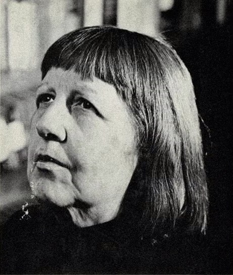

The Marguerite Young Society

A home for the work of Marguerite Young (1908 to 1995): her novel, her history, her essays and her poems.
Her works
- Miss MacIntosh, My Darling: her novel, 1965
- Angel in the Forest: two failed utopias in New Harmony, Indiana, 1945
- Harp Song for a Radical: the life and times of Eugene Victor Debs, 1999
- Inviting the Muses: stories, essays and reviews, 1994
- The Collected Poems of Marguerite Young: every surviving poem, 2022
Her philosophy
More About Young
- Psychology in Young's Works: how her writing takes up the mind
- Politics in Young's Works: power, utopia, labor and the people at the margins
- Marguerite Young, Our Darling: tributes and essays, 1994
- Young's Interviews Analyzed: what she said about her work and life
Who Was Marguerite Young? The Life Behind the Longest Great American Novel
The life of Marguerite Young, the Indiana-born author of Miss MacIntosh, My Darling: her utopias, her Greenwich Village years, and the novel that took her eighteen years to write.
Most people have never heard her name, so if you haven’t, that is no surprise. Marguerite Young wrote one of the most ambitious American novels of the twentieth century, kept company with some of the most famous writers of her era, and spent nearly fifty years as a fixture of Greenwich Village. And still she sits just outside the edge of the canon most readers are handed. This Society exists to fix this error in American literature, philosophy, psychology, and politics.
An Indiana childhood
Marguerite Young was born in Indianapolis, Indiana, in 1908. Her parents separated when she was small, and she and her younger sister were raised largely by their grandmother, a woman who painted and wrote poems of her own. From her, Young got an early and lasting sense that the imagination was a real place, somewhere a person could actually live.
She was a literary child in the most committed way. She was writing poems as a girl and publishing them young. She earned degrees from Butler University and the University of Chicago and did further graduate study, and for a while she taught high school English back in Indianapolis. Her first two books were collections of poetry, published while she was still teaching.
The town of failed utopias
In the late 1930s she visited New Harmony, Indiana, a small town that had once been the site of two nineteenth-century attempts to build a perfect society. Both had failed. Something about the place held her, and she moved there and stayed for years.
Out of that time came her first major book, Angel in the Forest: A Fairy Tale of Two Utopias, published in 1945. It braids history and imagination together into a study of people who tried to build heaven on earth and the ways their dreams came apart in their hands. It won her a Guggenheim Fellowship and real acclaim. The subject would stay with her for the rest of her life: the beautiful and doomed human habit of trying to perfect the world, and what that trying costs the people who attempt it.
Greenwich Village and the company she kept
By the 1940s Young had moved to New York and settled in Greenwich Village, where she would remain for most of her life. She became one of those legendary neighborhood figures, an eccentric known on sight, talking in the same lush, looping way she wrote.
Her circle was remarkable. Anaïs Nin championed her work. She knew Truman Capote and Carson McCullers and moved through the city’s literary scene for decades. She taught for years at the New School for Social Research, and a long line of younger writers came through her classroom and remembered her, for the rest of their lives, as the mentor who took them seriously.
The novel that took eighteen years
Somewhere in her early New York years she began the book that would come to define her. She thought Miss MacIntosh, My Darling would take about two years. It took eighteen. She worked at it daily, and the manuscript grew to nearly 1,200 pages, built out of long looping sentences and dream logic and a narrator riding a bus across the Midwest in search of a lost nursemaid.
When Scribner published it in 1965, many mainstream critics did not know what to do with a novel that size and that strange, and a good number of them dismissed it. But it found a devoted following that has never entirely faded, and it has since been called, only half as a joke, the longest great American novel almost nobody has read. If you want to meet the book itself, there is a full reading guide on this site to walk in with you.
One more enormous labor
Young was not finished with impossible projects. For the last long stretch of her life she worked on a sprawling biography of Eugene Debs, the labor leader and five-time candidate for president, a man whose fierce and unfashionable idealism clearly spoke to her. She did not live to complete it. It was published after her death as Harp Song for a Radical: The Life and Times of Eugene Victor Debs.
It fits everything else she cared about. Dreamers, radicals, and the long American argument about how we ought to live together: these were her lifelong subjects, whether she was writing about a failed utopia in Indiana, a hallucinating mother in a house by the sea, or a socialist who ran for office from a prison cell.
Her death, and her slow return
Marguerite Young died in 1995, at eighty-seven. For years afterward she was mostly a rumor, a name traded quietly among people who love difficult books. That has been changing. Her novel is back in print through the Dalkey Archive, new readers keep finding their way to her or returning to her. This Society makes the case that she was doing something well ahead of her time before philosophy even had the words to talk about what she accomplished.
Part of why this Society exists is a conviction that Young was not only a stylist but a thinker. Underneath the enormous sentences is a coherent way of seeing the self, memory, grief, and power, one I explore here under the name Radical Immanence. She built it quietly, decades before the culture had the words to receive it.
Reviews of Marguerite Young’s Work
Marguerite Young’s books have always divided critics. Some reviewers called her a genius and set her beside Melville and Joyce, while others gave up partway through or complained that her prose was too rich to follow. What follows gathers the major reviews of each book, from the first notices to the most recent reissues, so readers can see how her reputation has moved over eighty years.
Angel in the Forest (1945)
Young’s history of the two failed utopias at New Harmony, Indiana, was well received when it appeared and won her a Guggenheim Fellowship and a Newberry Library award. Martin Lebowitz, writing in The Nation in May 1945, found the book repetitive and overwritten in places but still judged it “a genuine work of art.” Marianne Hauser took up the book in the Sewanee Review in the spring of 1946.
When the book was reprinted in 1966, Harriet Zinnes returned to it in The Nation. She praised the original as superb and wondered whether readers of the 1960s, grown suspicious of dreamers, could take it in without irony.
The book found a new champion in Chad W. Post, publisher of Dalkey Archive Press, who wrote about it in October 2024 when Dalkey reissued it as one of its Essentials. He called it a fascinating and compelling book, driven by Young’s prose and by the strength of her material, and argued that its theme of abandoned utopias still works because readers can still believe utopia is possible.
Miss MacIntosh, My Darling (1965)
No book of Young’s drew stronger reactions in either direction. William Goyen, reviewing it on the front of the New York Times Book Review on September 12, 1965, compared it to Joyce, Broch, Melville and Faulkner and called it “a work of stunning magnitude and beauty.” Howell Pearre of the Nashville Banner went further, calling Young a genius and naming the novel the most important work in American literature since Moby-Dick.
Other reviewers were impressed and uneasy at once. Richard Ellmann, in the New York Herald Tribune, found the novel “an extraordinary cosmos” that was ambitious beyond what it could fulfill. Melvin Maddocks of the Christian Science Monitor ranked it with Ulysses and The Waves as an innovative novel, yet worried that Young may have written a book that, in the deepest sense, does not exist. Granville Hicks admired the recurring symbols and the hypnotic language but faulted the lack of fixed points, which left it unclear whose dream was whose. J. M. Edelstein, in The New Republic, read the tension between reality and dream as the book’s center and judged its obscure patterns an obstacle to its art.
Some critics simply could not finish. Peter Prescott later admitted that he quit after two days, even though his editor had offered him four times the usual rate. In England, Elizabeth Harvey of the Birmingham Post asked whether the novel’s length was substance or only size, though she admired Young’s stamina and found rewarding pockets of wit.
Writers who loved the book defended it fiercely. Anaïs Nin reviewed it for the Los Angeles Times in January 1966 under the title “One writer’s version of a complete universe,” and the piece later became the introduction to the 1979 paperback. Marianne Hauser, in the Sewanee Review in 1967, called it “masterful, exhilarating.” Anne Tyler later said that reading random pages of the novel cured her writer’s block while she was working on The Accidental Tourist.
The novel’s later critics have tended to treat it as a lost masterpiece. Steven Shaviro, writing in 1990, argued that its strength lies in refusing to fit either modernism or postmodernism. Gregory Feeley wrote about the 1994 Dalkey Archive reissue in the Washington Post Book World, and Kenneth King asked in the Antioch Review in 2016 whether it was a “Forgotten Masterpiece?” Meghan O’Gieblyn, writing in the Paris Review in 2018, found it slow going but argued that “the problem is not the book’s length but its ambition.” Her essay now introduces the Dalkey Archive edition. Ryan Ruby’s 2023 essay in The New Yorker named it “The Longest, Least-Remembered Great American Novel,” and Andie Blaine of Air Mail recommended the 2024 reissue in July of that year as best read about ten pages at a time before bed.
Inviting the Muses: Stories, Essays, Reviews (1994)
This collection of Young’s shorter work includes three stories, one of them previously unpublished, fifteen essays, twenty-three book reviews, and portraits of Johnny Gruelle, creator of Raggedy Ann, and the poet Marianne Moore. Publishers Weekly noted her admiration for writers who use symbolism and mysticism, such as Truman Capote and Doris Lessing, and her sharp quarrel with Sartre’s view of a meaningless life. The review predicted that her devotees “will welcome this collection of her early writings.”
Harp Song for a Radical: The Life and Times of Eugene Victor Debs (1999)
Young’s unfinished life of Debs, edited after her death by Charles Ruas and published by Knopf, split reviewers much as her novel had. Publishers Weekly, in July 1999, called it prodigious but not a traditional biography, and said its prose was “so purple it often clots the narrative flow.” Kai Bird, writing in Civilization, found the style chaotic and often hard to fathom but praised its vision of Debs as an American prophet.
Steven Moore, in the Washington Post in September 1999, was the book’s warmest reviewer. He called it fabulous and complained only that it was not long enough. Russell Baker reviewed it in the New York Review of Books under the title “Only in America,” and John Leonard took it up in The Nation as “Mr. Debs, My Darling,” a nod to the novel. Rick Levin wrote about it in The Stranger in January 2000 as “The Spinning Head of History.”
The Collected Poems of Marguerite Young (2022)
The first full gathering of Young’s poetry, edited by Phil Bevis, Joshua Rothes and Jacob Siefring, brought her earliest work back into view. Steven Moore reviewed it for the Poetry Foundation in October 2022 and praised it as an edition that rivals the work of a university press. He found the early poems uneven but called Prismatic Ground an impressive debut, and he argued that the poems are the root of her prose. His verdict on the whole was simple: “It was worth the wait.”
Alex Lanz, writing on his Substack Silent Friends in January 2023, admired the poems’ epic, Miltonic style and their engagement with Kant and Berkeley on perception and the limits of knowledge. He described them as “very old and very new” and argued they deserve a wider readership.
Writers Who Admired Her
Some of Young’s strongest admirers were fellow writers, and several of them first knew her as a teacher.
Kurt Vonnegut was one of her students when she taught high school English in Indianapolis, years before either of them was known. He went on to his own fame, and his judgment of his old teacher appeared on the cover of earlier editions of the novel, including Scribner’s two-volume set: Marguerite Young is “unquestionably a genius.”
John Gardner, author of Grendel and The Art of Fiction, studied with Young at the University of Iowa Writers’ Workshop, where she taught from 1954 to 1957. She was a teacher and mentor to him there, one of many young writers she shaped in those years. David O. Dowling’s 2019 history of the Workshop, A Delicate Aggression, gives her a chapter of her own, titled “The Guru.”
Anne Tyler turned to Miss MacIntosh, My Darling when she was stuck while writing The Accidental Tourist. She opened the novel to random pages, and wherever she landed, she later wrote, “a glorious wealth of words swooped out at me.” The reading broke her writer’s block.
Anaïs Nin was her most devoted champion. She persuaded Harcourt Brace Jovanovich to bring the novel out in paperback and wrote the preface for the 1979 edition, where she called the book “a canto to obsession.”
Buy Marguerite Young’s books
- Miss MacIntosh, My Darling
- Angel in the Forest
- The Collected Poems of Marguerite Young
- Inviting the Muses, out of print, borrow free at the Internet Archive
- Marguerite Young, Our Darling - Out of print
Literary Influences Marguerite Young Named in Her Interviews
Interviews used
- Ruas: Charles Ruas, WBAI
- Ruas, New Harmony: Charles Ruas and Joan Schwartz, WBAI, on Angel in the Forest
- Angel talk: Young’s talk on the reissue of Angel in the Forest
- Terkel: the “ST with MY” interview
- MacDonald: Duncan MacDonald, Observation Point, 1965
- WNYC: WNYC interview, part 1
- Callison 1 and 2: Kay Callison, American Audio Prose Library, 1983
- Friedman and Fuchs: Review of Contemporary Fiction
- Paris Review: The Art of Fiction, 1977
The Influences She Returned to Most
William James. This is the influence she named most often. She studied his psychology “as if it were a Bible” and taught it to her students. She took from him the stream of consciousness, the many selves under one roof, false memory, and “the person you did not become.” She also credits him with her pluralism, seeing the many rather than the one, and with the idea that a person is body, soul, and clothing. (Ruas, Callison 1, Callison 2, Terkel, MacDonald, Friedman and Fuchs)
Saint Augustine. She named The City of God and the Confessions again and again, saying she learned a great deal from their imagery and from his obsession with dreams. When asked about Joyce, she answered that she was influenced by Augustine instead. (Callison 1, Callison 2, Terkel, Friedman and Fuchs)
Herman Melville. She called Moby-Dick her favorite American novel and Melville “my great love,” and said she was “insane about Melville.” She saw in Moby-Dick the same pull between Scottish Calvinism and the longing for Catholicism that she found in her own work. She also liked that she lived near his birthplace. (Terkel, Callison 2, WNYC)
Charles Dickens. She read him by age ten or eleven, introduced by her grandmother. From Dickens she took the rule that every minor character must be fully alive, and the habit of showing a character’s inner life through the outside: body and clothing. She learned shorthand as a teenager because Dickens had. (Ruas, Callison 1, MacDonald, Terkel, Friedman and Fuchs, Paris Review)
Nikolai Gogol. She said she was “deeply under the spell” of Dead Souls, both for its attention to minor characters and for its form as a novel of the road, meeting people who are never seen again. (Ruas, Callison 1, Friedman and Fuchs)
Laurence Sterne. She named Tristram Shandy as a book that directly influenced her, called Sterne a writer she felt close to, and pointed to him when explaining her long sentences. (Ruas, Callison 1, Terkel, Friedman and Fuchs)
Cervantes. She called Don Quixote “the greatest of all novels” and placed Miss MacIntosh, My Darling in the tradition of the picaresque psychological novel. She noted that she mentions Don Quixote on the novel’s first page as a key to the journey ahead. (Callison 1, Terkel, Friedman and Fuchs)
Robert Browning. She studied all of Browning, including The Ring and the Book, at about eighteen with an older teacher, Catharine Merrill, in Indianapolis. Her belief that a writer should base characters on real events came from Browning’s idea that the poet is a reporter. (Ruas, Callison 1)
Thomas Carlyle. She said she took Carlyle as her master when she moved from poetry to prose. She also named Sartor Resartus among the books that shaped her and made a point of visiting his house in London. (Angel talk, Callison 1, Callison 2)
Samuel Taylor Coleridge. She called the albatross and guilt of The Rime of the Ancient Mariner “the secret heart” of her novel, and said the opium lady faces Coleridge’s final choice. Coleridge’s debate with Robert Owen was part of what drew her to the subject of Angel in the Forest. She even wrote to President Kennedy about nuclear testing using only the imagery of the Ancient Mariner. (Terkel, Angel talk, Ruas, New Harmony, Callison 1)
The Bible. Her grandmother had her read the Bible for its literary style as training for a writer, and Young said she still thought it the best training there is. She also named the Lives of the Saints and urged her students to read them. (WNYC, Terkel, Callison 1, Friedman and Fuchs)
Plutarch’s Lives. She called this “one of the most important books” for her. (Callison 1)
Reading That Shaped Particular Books and Ideas
John Milton. Paradise Lost and the Fall of Man was her major subject at the University of Chicago. She said Milton’s blindness was one reason she became fascinated by people missing a sense, like the stone-deaf man and the blind pianist in her novel. (Callison 1, Terkel)
John Lyly’s Euphues, Heraclitus, and the bestiaries. Her master’s thesis was on the birds and beasts in Lyly’s Euphues, and she said she studied animal symbolism “from Heraclitus onward.” She loved the old bestiaries because animals work as icons for saying things about people. (Ruas, Callison 1, Paris Review)
Fyodor Dostoevsky. She took one idea from him as a key from the very beginning of Miss MacIntosh: that sleepers divided by day all dream the same dreams at night, so our dreams bind us, not our reasons. (Terkel)
Walt Whitman. She described Miss MacIntosh, My Darling as “a sad Walt Whitman,” built on his theme of the one and the many. (Terkel, Callison 1)
Carl Jung. She said she read Jung “to give me courage along the way” and would call her novel Jungian rather than Joycean or Faulknerian. (Terkel)
Daniel Defoe. She thought of Miss MacIntosh as a kind of Robinson Crusoe with her umbrella, a Calvinist figure set down in a Miltonic or Dantean paradise. (Terkel)
Elizabeth Barrett Browning and Thomas De Quincey. She had already read Barrett Browning and De Quincey’s Confessions of an English Opium-Eater before meeting the real opium lady, and both shaped how she understood her. (Ruas, MacDonald, Callison 1)
Ralph Waldo Emerson and the Transcendentalists. She set the opium lady’s house near Boston because it was the home of “my beloved Emerson.” She also named Blake, Swedenborg, and Transcendentalism as the kind of philosophy American writing grows from. (MacDonald, Callison 2)
Edgar Lee Masters and Thomas Gray. While writing Angel in the Forest she thought a great deal about Spoon River Anthology and Gray’s “Elegy Written in a Country Churchyard.” She had not yet read Sherwood Anderson. (Ruas, New Harmony)
Joseph Smith and the Mormons. She said she was more influenced by the poetry of the Mormons than by T. S. Eliot, and that she loved Joseph Smith as the more poetic partner to Brigham Young. (Friedman and Fuchs, Ruas)
Charles Darwin, Audubon, and Rachel Carson. The opium lady, Minna Weissenbach, urged her to read Darwin’s Voyage of the Beagle, and Young kept notebooks of her nature reading. She also named Audubon and Rachel Carson. (WNYC, Ruas)
The epic tradition. At Chicago she studied the same sources Eliot drew on, including Dante, Milton, Lucretius, Locke, Fourier, Darwin, and Owen. (Friedman and Fuchs)
Teachers and Early Guides
Her grandmother. Young called her grandmother the great influence of her life and felt her presence while writing. Leon Edel told her Miss MacIntosh was “a grandmother’s book.” Her grandmother introduced her to Anatole France, Dickens, George Eliot’s Adam Bede, Victor Hugo, Blake, and Thomas Moore, and read metaphor as plain truth. (MacDonald, Ruas, Callison 1, Paris Review)
Anatole France. Through her grandmother he became the writer she loved most as a girl, and she read all of him in French. (Ruas, Paris Review)
Robert Morss Lovett and Ronald S. Crane. She named these University of Chicago professors as direct influences. Lovett taught her epic literature. In Crane’s class she read Tom Jones thirteen times to study its structure, which she called the most valuable training for her own writing. (Friedman and Fuchs)
Stith Thompson. She admired the ballad scholar and dreamed of collecting Scottish ballads in the Tennessee mountains. (Ruas, New Harmony)
Writers She Loved Without Imitating
She named these as writers she loved or admired while making clear their style was not hers:
- Mark Twain, for his dark cosmic spirit (Ruas)
- Theodore Dreiser and Sinclair Lewis, as great dreamers from the Midwest. Lewis once told her she had shown “another America.” (Ruas, Friedman and Fuchs)
- Edgar Allan Poe, whom she said she could almost see at Sheridan Square on rainy nights (Callison 2, Friedman and Fuchs)
- Dylan Thomas, whom she felt closer to than Henry James (Callison 2, Friedman and Fuchs)
- Henry James, who visited her in dreams while she wrote Miss MacIntosh, though she did not consider her writing Jamesian (Callison 1, Callison 2)
- Elinor Wylie, whom she preferred to Edna St. Vincent Millay (WNYC)
- Victor Hugo, W. H. Auden, William Carlos Williams, Wallace Stevens, James Merrill, Ambrose Bierce, and Vachel Lindsay (Friedman and Fuchs)
- Women writers she considered great: Kay Boyle, Christina Stead, Katherine Anne Porter, Katherine Mansfield, Anna Kavan, and Jane Bowles (Friedman and Fuchs)
- Later writers: Flannery O’Connor, Toni Morrison, and Cynthia Ozick, whom she thought was also influenced by William James (Callison 2, Friedman and Fuchs)
Influences From Outside Literature
Charlie Chaplin. She said Chaplin “influenced every book I’ve ever written,” through his mimicry. (Callison 2)
W. C. Fields, Marc Chagall, and Ethel Barrymore. She based the passive policeman on Fields, said Chagall influenced Esther Longtree, and said Barrymore shaped the way Miss MacIntosh walked. (Callison 2)
Writers She Said Did Not Influence Her
Gertrude Stein. She knew and liked Stein but felt no kinship with her as a writer. (Ruas, Friedman and Fuchs)
T. S. Eliot. She admired Eliot but resented readers who heard echoes of him, saying she went to his sources rather than to him. (Friedman and Fuchs, MacDonald)
James Joyce. She loved his work but told Friedman and Fuchs he did not influence her. In the 1983 Callison interview, however, she said she related herself more closely to Sterne and Joyce than to Henry James. (Friedman and Fuchs, Callison 1)
Virginia Woolf. She rejected the comparison, though she based Miss MacIntosh’s walk into the sea partly on Woolf’s death. (MacDonald, Ruas)
Willa Cather. She said she liked Cather but did not love her. (Ruas)
Chaucer. She said Chaucer could not have been further from her mind when she wrote of the old woman turned young. (Callison 1)
Thomas Wolfe, Faulkner, and Proust. When others compared her to them, she redirected the comparison to Jung. (Terkel)
Coral Russell
Coral Russell is a retired teacher with a Master’s in Education, with an emphasis in Reading and English for Speakers of Other Languages (ESOL). She taught ESOL for 15 years, from kindergarten through adult learners, at public and private schools in the US and Korea, as well as virtually in China and Venezuela. She also taught writing at the community college level and served as a director and teacher for adult education through the Ohio state program.
She started exploring Marguerite Young’s work in 2019, after her first reading of Miss MacIntosh, My Darling.
She writes at The Marguerite Young Society on Substack, where she has spent years building one of the most sustained bodies of literary and political commentary happening outside a university. Her focus is the work of novelist Marguerite Young, especially the sprawling 1965 novel Miss MacIntosh, My Darling, which she reads as a philosophical system as much as a story. She is the author of Radical Immanence based on what she believes is Young’s philosophy, and her writing moves between close textual analysis, personal history, and the wider political and psychological questions Young’s work opens up.